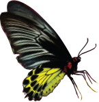
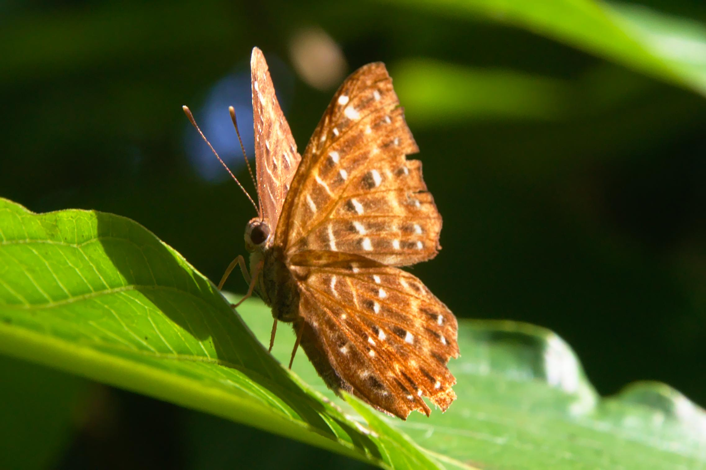
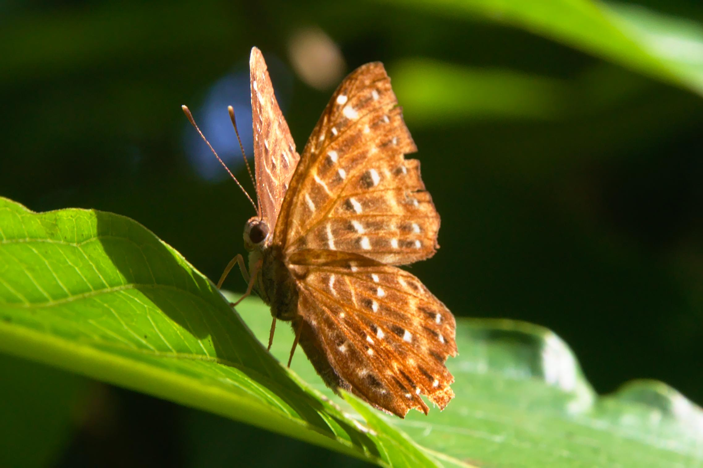
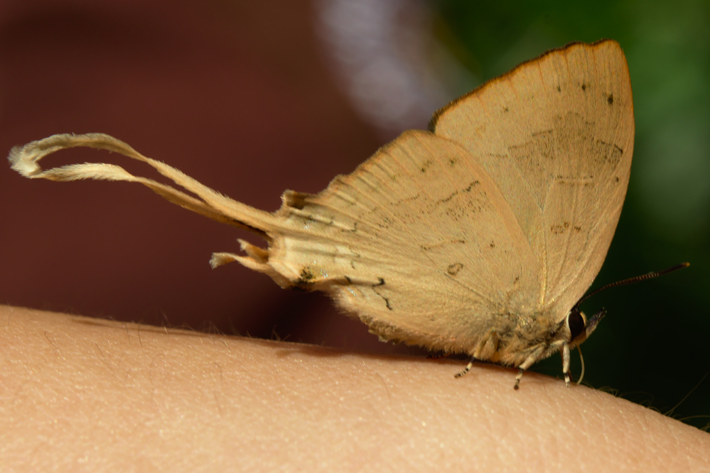
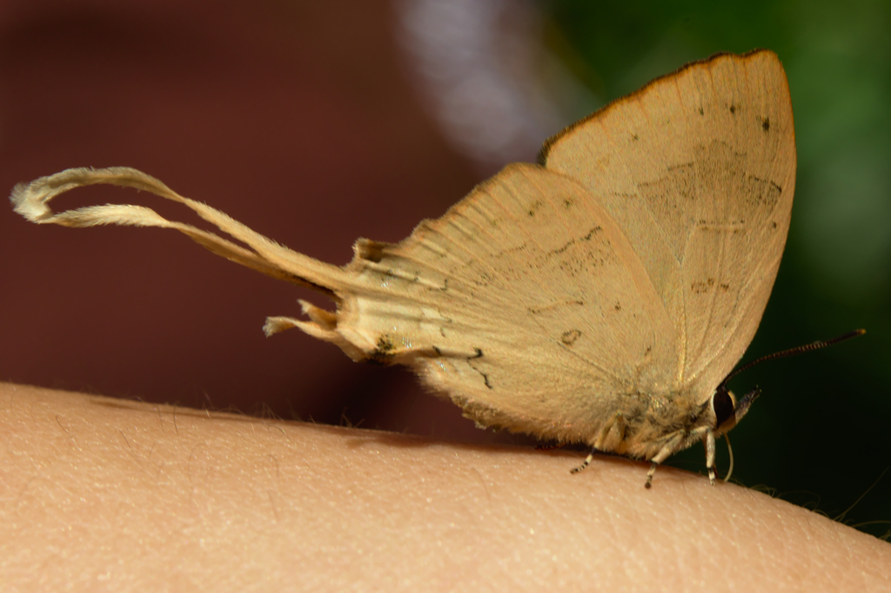

Butterflies - the "flying flowers"
I’m “Nong Poly”. I’m one of the butterflies (still only a caterpillar now, can’t wait to be a grown-up butterfly) that can be found in QSBG and I’m your guide for today. Today I not only get to introduce you to all my friends but also a new page design that is coming to www.qsbginsects.org soon, the black goes with my eyes I think.
While I’m called “Nong Poly” scientists call my species Polyura athamas and some people call me “XXXXXXX”, as you can see we have really neat heads-cool eh!
Introduction
Me and my butterfly friends were described by the French Poet Ponce Denis Ecouchard Lebrun as “flying flowers”. QSBG is a botanic garden and has lots of “flowers chained to the ground” but I’m going to tell you about me and my flying friends.
Butterflies are often admired for their beauty, delicacy and grace, but there is much more to us than this. Butterflies are just one small group among the amazing insects. Many have amazing life-histories and behavior in addition to their beauty. One of the most amazing things about butterflies that anyone can see is their life cycle, and this is how I get to change from a caterpillar to join my friends as a flying flower. Butterflies, and many other insects, have a life cycle where they undergo an amazing change from a simple egg to the feeding machine that is a caterpillar, before finally transforming (inside a chrysalis) to appear as a completely transformed butterfly — looking nothing like the caterpillar it was a few days before.
Meet my friends
Some of the more common butterflies you are likely to see in QSBG include Jezabels (Delias), Grass Yellows (Eurema), and Birdwings (Troides). A simple pamphlet to help you recognize these and other species is “Butterflies of the Garden” which covers 30 species found in QSBG.

While you are at QSBG you may also meet some of my friends from “the darkside” — the moths! They are not really that “dark”, it is just they generally prefer to fly at night. The handy chart to the right might help you recognise what is a butterfly and what is a moth.
What we get up to in QSBG
While admiring me and my friends for our beauty you also have a chance to see us doing all sort of interesting things in our natural surroundings, perhaps as simple as flitting from flower to flower, drinking from streams, mating, laying eggs, or maybe crunching away on a leaf as a caterpillar.
In our diversity and activities we are important parts of a healthy ecosystem. In QSBG one of the most important things we do is pollination of plants (we especially like the red or yellow one and ones with long tubes that suit our very long mouths). Of course, we are an important part of ecotourism too!
Photos only please
QSBG is part of Doi Pui-Suthep National Park so butterflies and all other living things are protected, please take nothing more than photos (we are very photogenic!). The best time to see and especially photograph butterflies is during the dry season, especially in January, February and March. At this time many species of butterflies concentrate around streams within the garden (see map below). During the wet season the best opportunities are usually around the glasshouse complex, when butterflies visit flowers planted in the gardens in this area.
Nong Poly

Hi again. This is where you can find me in the garden.
Catopsilia pomona


commonly seen throughout QSBG, often seen flying fast among the glasshouse gardens
Troides helena

a large butterfly, often seen flying high, occasionally visits flowers around the glasshouse area
Zemeros flegyas
 

a small interesting butterfly that is most often seen sunning itself and holding its wings at an interesting angle
Potanthus mingo


a fast flier, skipping from perch to perch, most often seen near streams near the entrance of the garden
Cheritra freja
 

often hard to see as it rests among the leaves of bushes and trees, often on the underside

QSBG Butterflies list and database
More information
The garden has two brochures on butterflies of the garden, viz.
1. “butterflies — the flying flowers of the garden”: a general introduction to butterflies in the garden (English and Thai versions)
2. “Butterflies of the garden”: photographs of some of the more common butterflies in QSBG (English/Thai version)
contact us at:
PO Box 7 Mae Rim,
Chiang Mai 50180
THAILAND Ph: +66-53-841243; Fx: +66-53-841242
email: entomology@qsbg.org
www.qsbginsects.org
The Entomology Section of QSBG is also happy to help whenever we can
Image credits: Thanks to the following for permitting the use of their images: R. J. Cunningham, Burkhard Hinnersmann ex Wikimedia CC-BY-SA-3.0, Anaxibia, L. Shyamal CC-BY-2.5, William Atkinson (PD)